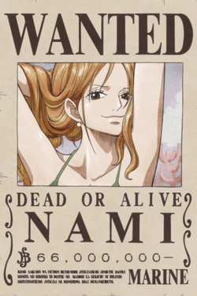
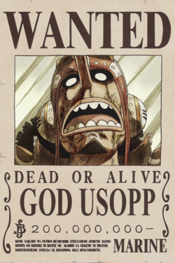
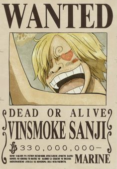
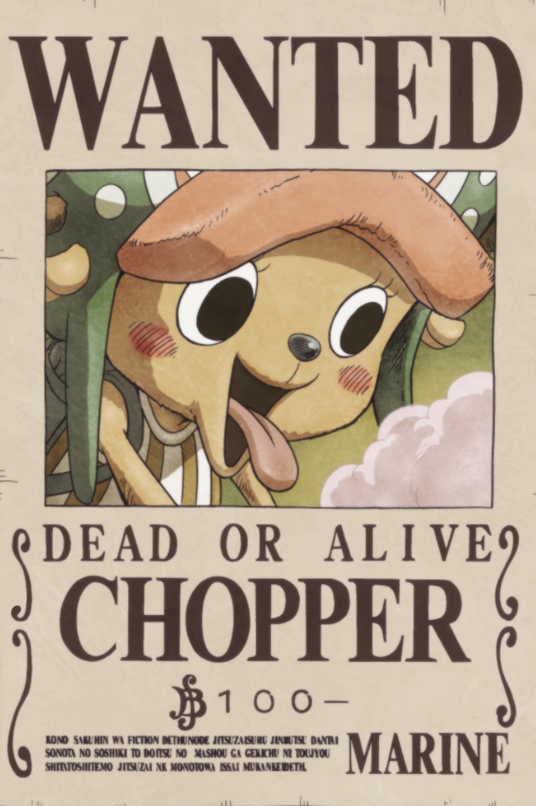
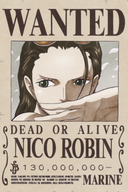
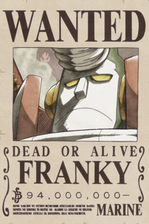
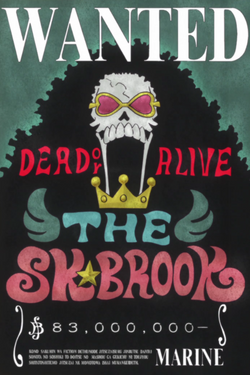
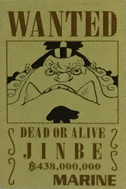

몽키 D 루피
롤로노아 조로
나미
우솝
빈스모크 상디
토니토니 쵸파
니코 로빈
프랑키
브룩
징베
|
|
 |  |  |
|---|---|---|---|---|
| 선장 | 전투원 | 항해사 | 저격수 | 요리사 |
| 밀짚모자 몽키 D 루피 |
현상금 사냥꾼 롤로노아 조로 |
도둑고양이 나미 |
갓 우솝 |
검은 다리 빈스모크 상디 |
 |  |  |  |  |
| 선의 | 고고학자 | 조선공 | 음악가 | 조타수 |
| 솜사탕광 토니토니 쵸파 |
악마의 아이 니코 로빈 |
철인 프랑키 |
소울 킹 브룩 |
바다의 협객 징베 |